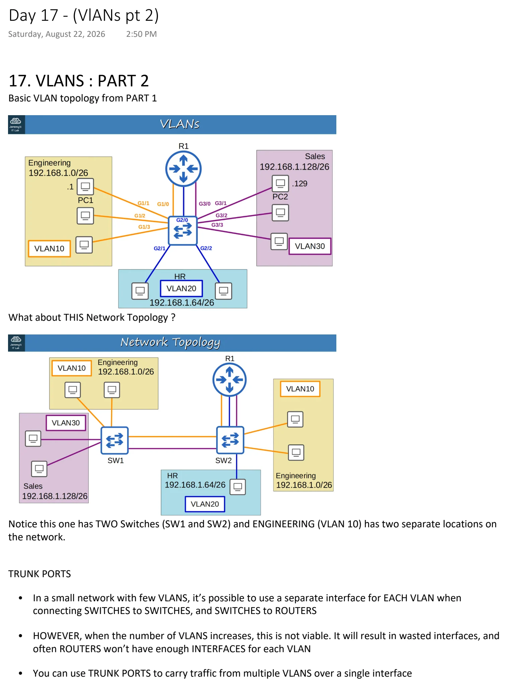
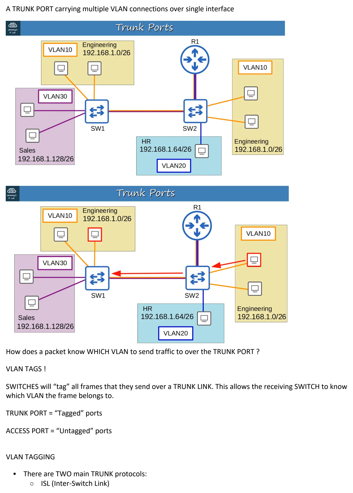
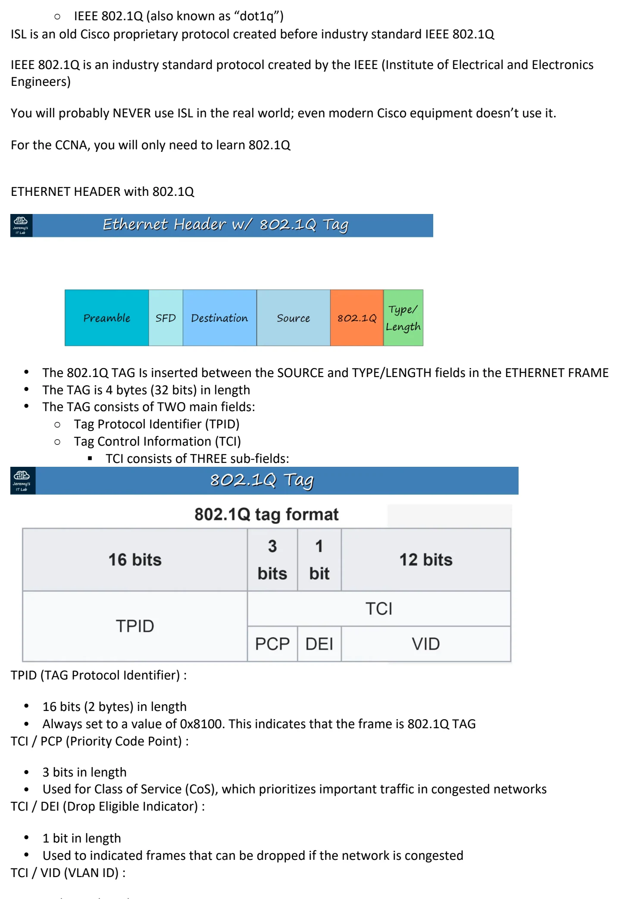
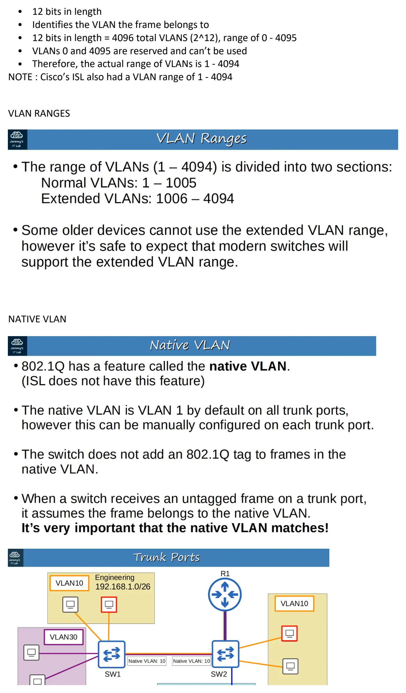
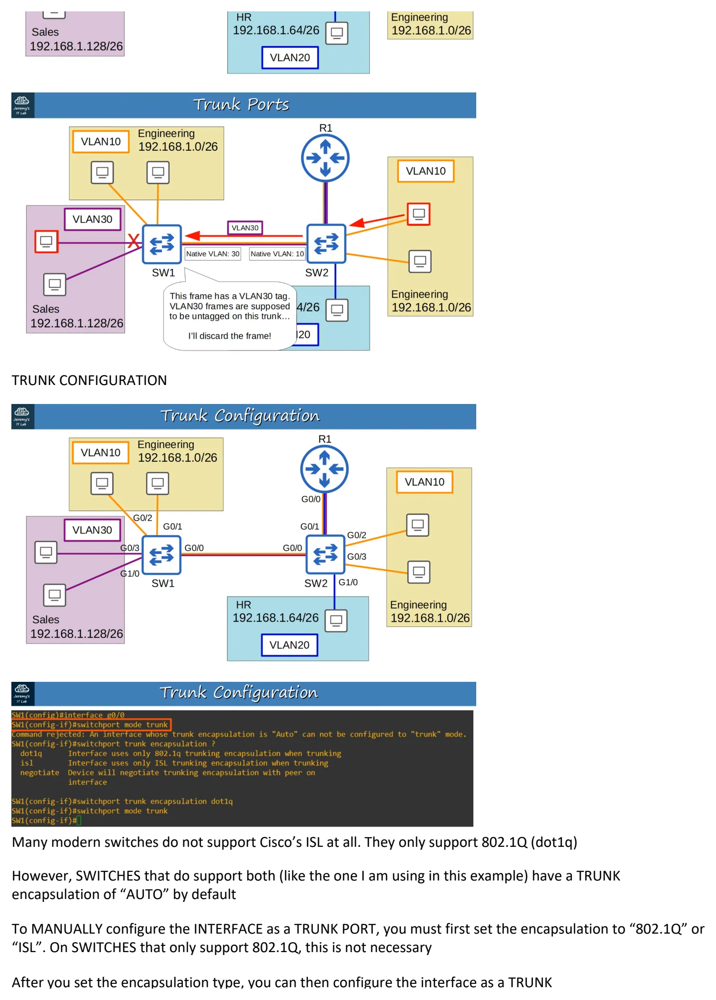
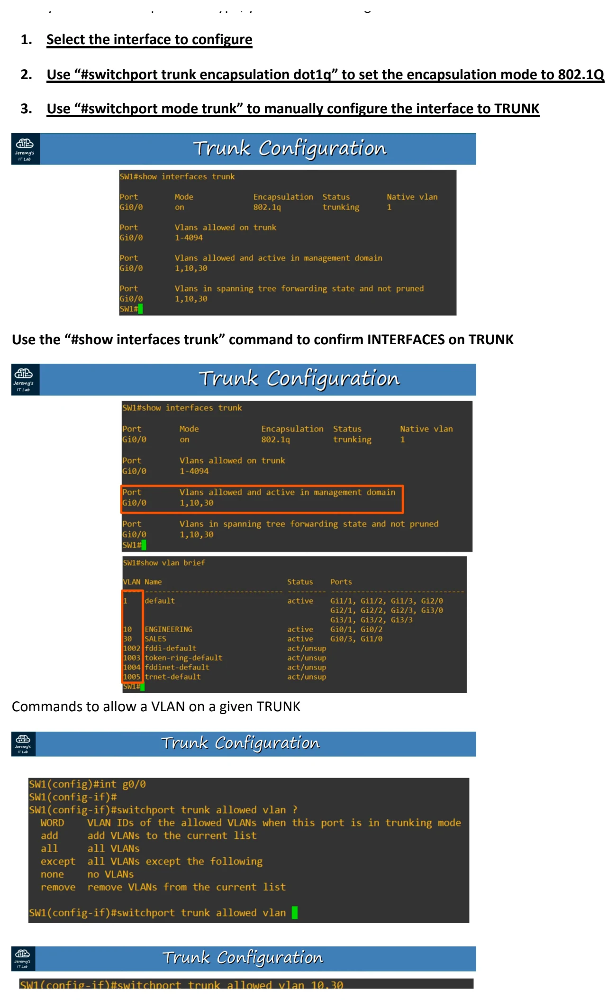
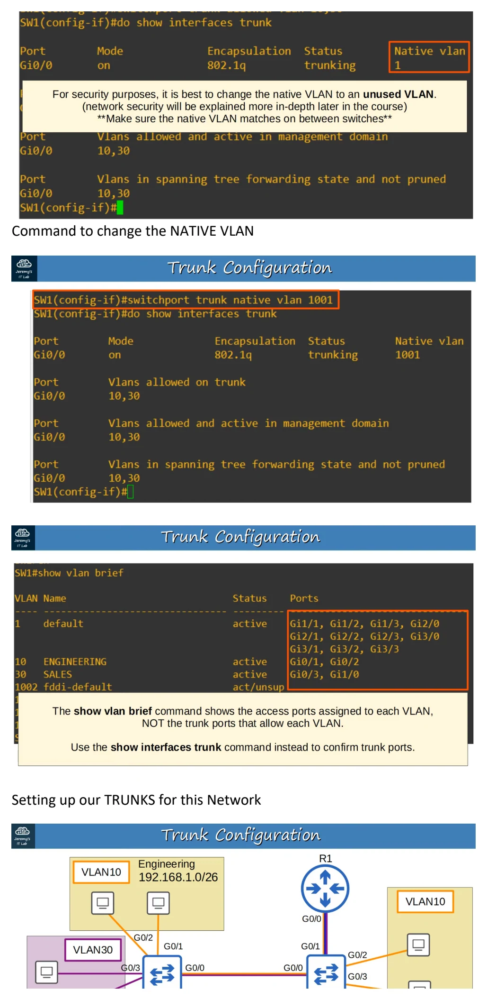
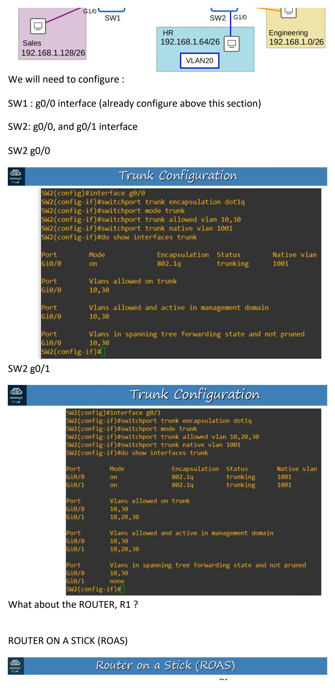
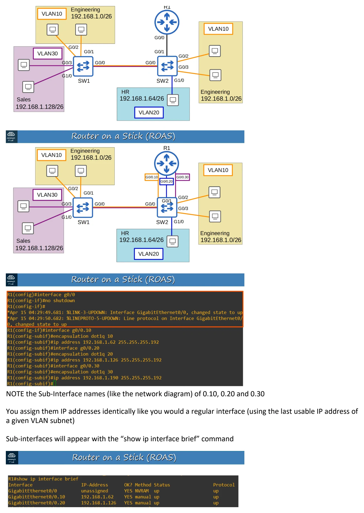
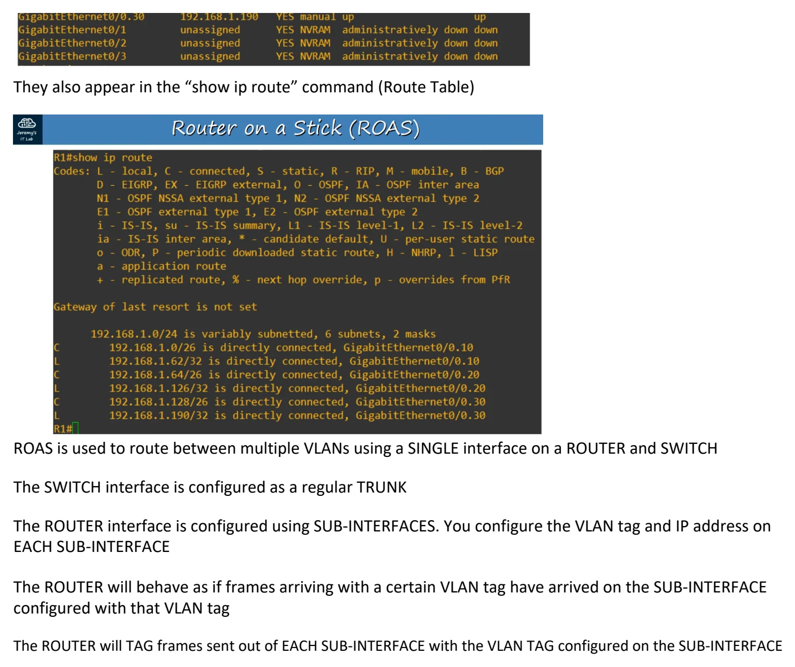

(VlANs pt 2)
Download original PDF









Text view — (VlANs pt 2)
Extracted from the original export. Diagrams and some formatting appear in the notes above.
Day 17 - (VlANs pt 2) Saturday, August 22, 2026 2:50 PM 17. VLANS : PART 2 Basic VLAN topology from PART 1 What about THIS Network Topology ? Notice this one has TWO Switches (SW1 and SW2) and ENGINEERING (VLAN 10) has two separate locations on the network. TRUNK PORTS • In a small network with few VLANS, it’s possible to use a separate interface for EACH VLAN when connecting SWITCHES to SWITCHES, and SWITCHES to ROUTERS • HOWEVER, when the number of VLANS increases, this is not viable. It will result in wasted interfaces, and often ROUTERS won’t have enough INTERFACES for each VLAN • You can use TRUNK PORTS to carry traffic from multiple VLANS over a single interface A TRUNK PORT carrying multiple VLAN connections over single interface How does a packet know WHICH VLAN to send traffic to over the TRUNK PORT ? VLAN TAGS ! SWITCHES will “tag” all frames that they send over a TRUNK LINK. This allows the receiving SWITCH to know which VLAN the frame belongs to. TRUNK PORT = “Tagged” ports ACCESS PORT = “Untagged” ports VLAN TAGGING • There are TWO main TRUNK protocols: ○ ISL (Inter-Switch Link) ○ IEEE 802.1Q (also known as “dot1q”) ISL is an old Cisco proprietary protocol created before industry standard IEEE 802.1Q IEEE 802.1Q is an industry standard protocol created by the IEEE (Institute of Electrical and Electronics Engineers) You will probably NEVER use ISL in the real world; even modern Cisco equipment doesn’t use it. For the CCNA, you will only need to learn 802.1Q ETHERNET HEADER with 802.1Q • The 802.1Q TAG Is inserted between the SOURCE and TYPE/LENGTH fields in the ETHERNET FRAME • The TAG is 4 bytes (32 bits) in length • The TAG consists of TWO main fields: ○ Tag Protocol Identifier (TPID) ○ Tag Control Information (TCI) § TCI consists of THREE sub-fields: TPID (TAG Protocol Identifier) : • 16 bits (2 bytes) in length • Always set to a value of 0x8100. This indicates that the frame is 802.1Q TAG TCI / PCP (Priority Code Point) : • 3 bits in length • Used for Class of Service (CoS), which prioritizes important traffic in congested networks TCI / DEI (Drop Eligible Indicator) : • 1 bit in length • Used to indicated frames that can be dropped if the network is congested TCI / VID (VLAN ID) : • 12 bits in length • Identifies the VLAN the frame belongs to • 12 bits in length = 4096 total VLANS (2^12), range of 0 - 4095 • VLANs 0 and 4095 are reserved and can’t be used • Therefore, the actual range of VLANs is 1 - 4094 NOTE : Cisco’s ISL also had a VLAN range of 1 - 4094 VLAN RANGES NATIVE VLAN TRUNK CONFIGURATION Many modern switches do not support Cisco’s ISL at all. They only support 802.1Q (dot1q) However, SWITCHES that do support both (like the one I am using in this example) have a TRUNK encapsulation of “AUTO” by default To MANUALLY configure the INTERFACE as a TRUNK PORT, you must first set the encapsulation to “802.1Q” or “ISL”. On SWITCHES that only support 802.1Q, this is not necessary After you set the encapsulation type, you can then configure the interface as a TRUNK 1. Select the interface to configure 2. Use “#switchport trunk encapsulation dot1q” to set the encapsulation mode to 802.1Q 3. Use “#switchport mode trunk” to manually configure the interface to TRUNK Use the “#show interfaces trunk” command to confirm INTERFACES on TRUNK Commands to allow a VLAN on a given TRUNK Command to change the NATIVE VLAN Setting up our TRUNKS for this Network We will need to configure : SW1 : g0/0 interface (already configure above this section) SW2: g0/0, and g0/1 interface SW2 g0/0 SW2 g0/1 What about the ROUTER, R1 ? ROUTER ON A STICK (ROAS) NOTE the Sub-Interface names (like the network diagram) of 0.10, 0.20 and 0.30 You assign them IP addresses identically like you would a regular interface (using the last usable IP address of a given VLAN subnet) Sub-interfaces will appear with the “show ip interface brief” command They also appear in the “show ip route” command (Route Table) ROAS is used to route between multiple VLANs using a SINGLE interface on a ROUTER and SWITCH The SWITCH interface is configured as a regular TRUNK The ROUTER interface is configured using SUB-INTERFACES. You configure the VLAN tag and IP address on EACH SUB-INTERFACE The ROUTER will behave as if frames arriving with a certain VLAN tag have arrived on the SUB-INTERFACE configured with that VLAN tag The ROUTER will TAG frames sent out of EACH SUB-INTERFACE with the VLAN TAG configured on the SUB-INTERFACE Day 17 - (VlANs pt 2) Saturday, August 22, 2026 2:50 PM 17. VLANS : PART 2 Basic VLAN topology from PART 1 What about THIS Network Topology ? Notice this one has TWO Switches (SW1 and SW2) and ENGINEERING (VLAN 10) has two separate locations on the network. TRUNK PORTS • In a small network with few VLANS, it’s possible to use a separate interface for EACH VLAN when connecting SWITCHES to SWITCHES, and SWITCHES to ROUTERS • HOWEVER, when the number of VLANS increases, this is not viable. It will result in wasted interfaces, and often ROUTERS won’t have enough INTERFACES for each VLAN • You can use TRUNK PORTS to carry traffic from multiple VLANS over a single interface A TRUNK PORT carrying multiple VLAN connections over single interface How does a packet know WHICH VLAN to send traffic to over the TRUNK PORT ? VLAN TAGS ! SWITCHES will “tag” all frames that they send over a TRUNK LINK. This allows the receiving SWITCH to know which VLAN the frame belongs to. TRUNK PORT = “Tagged” ports ACCESS PORT = “Untagged” ports VLAN TAGGING • There are TWO main TRUNK protocols: ○ ISL (Inter-Switch Link) ○ IEEE 802.1Q (also known as “dot1q”) ISL is an old Cisco proprietary protocol created before industry standard IEEE 802.1Q IEEE 802.1Q is an industry standard protocol created by the IEEE (Institute of Electrical and Electronics Engineers) You will probably NEVER use ISL in the real world; even modern Cisco equipment doesn’t use it. For the CCNA, you will only need to learn 802.1Q ETHERNET HEADER with 802.1Q • The 802.1Q TAG Is inserted between the SOURCE and TYPE/LENGTH fields in the ETHERNET FRAME • The TAG is 4 bytes (32 bits) in length • The TAG consists of TWO main fields: ○ Tag Protocol Identifier (TPID) ○ Tag Control Information (TCI) § TCI consists of THREE sub-fields: TPID (TAG Protocol Identifier) : • 16 bits (2 bytes) in length • Always set to a value of 0x8100. This indicates that the frame is 802.1Q TAG TCI / PCP (Priority Code Point) : • 3 bits in length • Used for Class of Service (CoS), which prioritizes important traffic in congested networks TCI / DEI (Drop Eligible Indicator) : • 1 bit in length • Used to indicated frames that can be dropped if the network is congested TCI / VID (VLAN ID) : • 12 bits in length • Identifies the VLAN the frame belongs to • 12 bits in length = 4096 total VLANS (2^12), range of 0 - 4095 • VLANs 0 and 4095 are reserved and can’t be used • Therefore, the actual range of VLANs is 1 - 4094 NOTE : Cisco’s ISL also had a VLAN range of 1 - 4094 VLAN RANGES NATIVE VLAN TRUNK CONFIGURATION Many modern switches do not support Cisco’s ISL at all. They only support 802.1Q (dot1q) However, SWITCHES that do support both (like the one I am using in this example) have a TRUNK encapsulation of “AUTO” by default To MANUALLY configure the INTERFACE as a TRUNK PORT, you must first set the encapsulation to “802.1Q” or “ISL”. On SWITCHES that only support 802.1Q, this is not necessary After you set the encapsulation type, you can then configure the interface as a TRUNK 1. Select the interface to configure 2. Use “#switchport trunk encapsulation dot1q” to set the encapsulation mode to 802.1Q 3. Use “#switchport mode trunk” to manually configure the interface to TRUNK Use the “#show interfaces trunk” command to confirm INTERFACES on TRUNK Commands to allow a VLAN on a given TRUNK Command to change the NATIVE VLAN Setting up our TRUNKS for this Network We will need to configure : SW1 : g0/0 interface (already configure above this section) SW2: g0/0, and g0/1 interface SW2 g0/0 SW2 g0/1 What about the ROUTER, R1 ? ROUTER ON A STICK (ROAS) NOTE the Sub-Interface names (like the network diagram) of 0.10, 0.20 and 0.30 You assign them IP addresses identically like you would a regular interface (using the last usable IP address of a given VLAN subnet) Sub-interfaces will appear with the “show ip interface brief” command They also appear in the “show ip route” command (Route Table) ROAS is used to route between multiple VLANs using a SINGLE interface on a ROUTER and SWITCH The SWITCH interface is configured as a regular TRUNK The ROUTER interface is configured using SUB-INTERFACES. You configure the VLAN tag and IP address on EACH SUB-INTERFACE The ROUTER will behave as if frames arriving with a certain VLAN tag have arrived on the SUB-INTERFACE configured with that VLAN tag The ROUTER will TAG frames sent out of EACH SUB-INTERFACE with the VLAN TAG configured on the SUB-INTERFACE Day 17 - (VlANs pt 2) Saturday, August 22, 2026 2:50 PM 17. VLANS : PART 2 Basic VLAN topology from PART 1 What about THIS Network Topology ? Notice this one has TWO Switches (SW1 and SW2) and ENGINEERING (VLAN 10) has two separate locations on the network. TRUNK PORTS • In a small network with few VLANS, it’s possible to use a separate interface for EACH VLAN when connecting SWITCHES to SWITCHES, and SWITCHES to ROUTERS • HOWEVER, when the number of VLANS increases, this is not viable. It will result in wasted interfaces, and often ROUTERS won’t have enough INTERFACES for each VLAN • You can use TRUNK PORTS to carry traffic from multiple VLANS over a single interface A TRUNK PORT carrying multiple VLAN connections over single interface How does a packet know WHICH VLAN to send traffic to over the TRUNK PORT ? VLAN TAGS ! SWITCHES will “tag” all frames that they send over a TRUNK LINK. This allows the receiving SWITCH to know which VLAN the frame belongs to. TRUNK PORT = “Tagged” ports ACCESS PORT = “Untagged” ports VLAN TAGGING • There are TWO main TRUNK protocols: ○ ISL (Inter-Switch Link) ○ IEEE 802.1Q (also known as “dot1q”) ISL is an old Cisco proprietary protocol created before industry standard IEEE 802.1Q IEEE 802.1Q is an industry standard protocol created by the IEEE (Institute of Electrical and Electronics Engineers) You will probably NEVER use ISL in the real world; even modern Cisco equipment doesn’t use it. For the CCNA, you will only need to learn 802.1Q ETHERNET HEADER with 802.1Q • The 802.1Q TAG Is inserted between the SOURCE and TYPE/LENGTH fields in the ETHERNET FRAME • The TAG is 4 bytes (32 bits) in length • The TAG consists of TWO main fields: ○ Tag Protocol Identifier (TPID) ○ Tag Control Information (TCI) § TCI consists of THREE sub-fields: TPID (TAG Protocol Identifier) : • 16 bits (2 bytes) in length • Always set to a value of 0x8100. This indicates that the frame is 802.1Q TAG TCI / PCP (Priority Code Point) : • 3 bits in length • Used for Class of Service (CoS), which prioritizes important traffic in congested networks TCI / DEI (Drop Eligible Indicator) : • 1 bit in length • Used to indicated frames that can be dropped if the network is congested TCI / VID (VLAN ID) : • 12 bits in length • Identifies the VLAN the frame belongs to • 12 bits in length = 4096 total VLANS (2^12), range of 0 - 4095 • VLANs 0 and 4095 are reserved and can’t be used • Therefore, the actual range of VLANs is 1 - 4094 NOTE : Cisco’s ISL also had a VLAN range of 1 - 4094 VLAN RANGES NATIVE VLAN TRUNK CONFIGURATION Many modern switches do not support Cisco’s ISL at all. They only support 802.1Q (dot1q) However, SWITCHES that do support both (like the one I am using in this example) have a TRUNK encapsulation of “AUTO” by default To MANUALLY configure the INTERFACE as a TRUNK PORT, you must first set the encapsulation to “802.1Q” or “ISL”. On SWITCHES that only support 802.1Q, this is not necessary After you set the encapsulation type, you can then configure the interface as a TRUNK 1. Select the interface to configure 2. Use “#switchport trunk encapsulation dot1q” to set the encapsulation mode to 802.1Q 3. Use “#switchport mode trunk” to manually configure the interface to TRUNK Use the “#show interfaces trunk” command to confirm INTERFACES on TRUNK Commands to allow a VLAN on a given TRUNK Command to change the NATIVE VLAN Setting up our TRUNKS for this Network We will need to configure : SW1 : g0/0 interface (already configure above this section) SW2: g0/0, and g0/1 interface SW2 g0/0 SW2 g0/1 What about the ROUTER, R1 ? ROUTER ON A STICK (ROAS) NOTE the Sub-Interface names (like the network diagram) of 0.10, 0.20 and 0.30 You assign them IP addresses identically like you would a regular interface (using the last usable IP address of a given VLAN subnet) Sub-interfaces will appear with the “show ip interface brief” command They also appear in the “show ip route” command (Route Table) ROAS is used to route between multiple VLANs using a SINGLE interface on a ROUTER and SWITCH The SWITCH interface is configured as a regular TRUNK The ROUTER interface is configured using SUB-INTERFACES. You configure the VLAN tag and IP address on EACH SUB-INTERFACE The ROUTER will behave as if frames arriving with a certain VLAN tag have arrived on the SUB-INTERFACE configured with that VLAN tag The ROUTER will TAG frames sent out of EACH SUB-INTERFACE with the VLAN TAG configured on the SUB-INTERFACE Day 17 - (VlANs pt 2) Saturday, August 22, 2026 2:50 PM 17. VLANS : PART 2 Basic VLAN topology from PART 1 What about THIS Network Topology ? Notice this one has TWO Switches (SW1 and SW2) and ENGINEERING (VLAN 10) has two separate locations on the network. TRUNK PORTS • In a small network with few VLANS, it’s possible to use a separate interface for EACH VLAN when connecting SWITCHES to SWITCHES, and SWITCHES to ROUTERS • HOWEVER, when the number of VLANS increases, this is not viable. It will result in wasted interfaces, and often ROUTERS won’t have enough INTERFACES for each VLAN • You can use TRUNK PORTS to carry traffic from multiple VLANS over a single interface A TRUNK PORT carrying multiple VLAN connections over single interface How does a packet know WHICH VLAN to send traffic to over the TRUNK PORT ? VLAN TAGS ! SWITCHES will “tag” all frames that they send over a TRUNK LINK. This allows the receiving SWITCH to know which VLAN the frame belongs to. TRUNK PORT = “Tagged” ports ACCESS PORT = “Untagged” ports VLAN TAGGING • There are TWO main TRUNK protocols: ○ ISL (Inter-Switch Link) ○ IEEE 802.1Q (also known as “dot1q”) ISL is an old Cisco proprietary protocol created before industry standard IEEE 802.1Q IEEE 802.1Q is an industry standard protocol created by the IEEE (Institute of Electrical and Electronics Engineers) You will probably NEVER use ISL in the real world; even modern Cisco equipment doesn’t use it. For the CCNA, you will only need to learn 802.1Q ETHERNET HEADER with 802.1Q • The 802.1Q TAG Is inserted between the SOURCE and TYPE/LENGTH fields in the ETHERNET FRAME • The TAG is 4 bytes (32 bits) in length • The TAG consists of TWO main fields: ○ Tag Protocol Identifier (TPID) ○ Tag Control Information (TCI) § TCI consists of THREE sub-fields: TPID (TAG Protocol Identifier) : • 16 bits (2 bytes) in length • Always set to a value of 0x8100. This indicates that the frame is 802.1Q TAG TCI / PCP (Priority Code Point) : • 3 bits in length • Used for Class of Service (CoS), which prioritizes important traffic in congested networks TCI / DEI (Drop Eligible Indicator) : • 1 bit in length • Used to indicated frames that can be dropped if the network is congested TCI / VID (VLAN ID) : • 12 bits in length • Identifies the VLAN the frame belongs to • 12 bits in length = 4096 total VLANS (2^12), range of 0 - 4095 • VLANs 0 and 4095 are reserved and can’t be used • Therefore, the actual range of VLANs is 1 - 4094 NOTE : Cisco’s ISL also had a VLAN range of 1 - 4094 VLAN RANGES NATIVE VLAN TRUNK CONFIGURATION Many modern switches do not support Cisco’s ISL at all. They only support 802.1Q (dot1q) However, SWITCHES that do support both (like the one I am using in this example) have a TRUNK encapsulation of “AUTO” by default To MANUALLY configure the INTERFACE as a TRUNK PORT, you must first set the encapsulation to “802.1Q” or “ISL”. On SWITCHES that only support 802.1Q, this is not necessary After you set the encapsulation type, you can then configure the interface as a TRUNK 1. Select the interface to configure 2. Use “#switchport trunk encapsulation dot1q” to set the encapsulation mode to 802.1Q 3. Use “#switchport mode trunk” to manually configure the interface to TRUNK Use the “#show interfaces trunk” command to confirm INTERFACES on TRUNK Commands to allow a VLAN on a given TRUNK Command to change the NATIVE VLAN Setting up our TRUNKS for this Network We will need to configure : SW1 : g0/0 interface (already configure above this section) SW2: g0/0, and g0/1 interface SW2 g0/0 SW2 g0/1 What about the ROUTER, R1 ? ROUTER ON A STICK (ROAS) NOTE the Sub-Interface names (like the network diagram) of 0.10, 0.20 and 0.30 You assign them IP addresses identically like you would a regular interface (using the last usable IP address of a given VLAN subnet) Sub-interfaces will appear with the “show ip interface brief” command They also appear in the “show ip route” command (Route Table) ROAS is used to route between multiple VLANs using a SINGLE interface on a ROUTER and SWITCH The SWITCH interface is configured as a regular TRUNK The ROUTER interface is configured using SUB-INTERFACES. You configure the VLAN tag and IP address on EACH SUB-INTERFACE The ROUTER will behave as if frames arriving with a certain VLAN tag have arrived on the SUB-INTERFACE configured with that VLAN tag The ROUTER will TAG frames sent out of EACH SUB-INTERFACE with the VLAN TAG configured on the SUB-INTERFACE Day 17 - (VlANs pt 2) Saturday, August 22, 2026 2:50 PM 17. VLANS : PART 2 Basic VLAN topology from PART 1 What about THIS Network Topology ? Notice this one has TWO Switches (SW1 and SW2) and ENGINEERING (VLAN 10) has two separate locations on the network. TRUNK PORTS • In a small network with few VLANS, it’s possible to use a separate interface for EACH VLAN when connecting SWITCHES to SWITCHES, and SWITCHES to ROUTERS • HOWEVER, when the number of VLANS increases, this is not viable. It will result in wasted interfaces, and often ROUTERS won’t have enough INTERFACES for each VLAN • You can use TRUNK PORTS to carry traffic from multiple VLANS over a single interface A TRUNK PORT carrying multiple VLAN connections over single interface How does a packet know WHICH VLAN to send traffic to over the TRUNK PORT ? VLAN TAGS ! SWITCHES will “tag” all frames that they send over a TRUNK LINK. This allows the receiving SWITCH to know which VLAN the frame belongs to. TRUNK PORT = “Tagged” ports ACCESS PORT = “Untagged” ports VLAN TAGGING • There are TWO main TRUNK protocols: ○ ISL (Inter-Switch Link) ○ IEEE 802.1Q (also known as “dot1q”) ISL is an old Cisco proprietary protocol created before industry standard IEEE 802.1Q IEEE 802.1Q is an industry standard protocol created by the IEEE (Institute of Electrical and Electronics Engineers) You will probably NEVER use ISL in the real world; even modern Cisco equipment doesn’t use it. For the CCNA, you will only need to learn 802.1Q ETHERNET HEADER with 802.1Q • The 802.1Q TAG Is inserted between the SOURCE and TYPE/LENGTH fields in the ETHERNET FRAME • The TAG is 4 bytes (32 bits) in length • The TAG consists of TWO main fields: ○ Tag Protocol Identifier (TPID) ○ Tag Control Information (TCI) § TCI consists of THREE sub-fields: TPID (TAG Protocol Identifier) : • 16 bits (2 bytes) in length • Always set to a value of 0x8100. This indicates that the frame is 802.1Q TAG TCI / PCP (Priority Code Point) : • 3 bits in length • Used for Class of Service (CoS), which prioritizes important traffic in congested networks TCI / DEI (Drop Eligible Indicator) : • 1 bit in length • Used to indicated frames that can be dropped if the network is congested TCI / VID (VLAN ID) : • 12 bits in length • Identifies the VLAN the frame belongs to • 12 bits in length = 4096 total VLANS (2^12), range of 0 - 4095 • VLANs 0 and 4095 are reserved and can’t be used • Therefore, the actual range of VLANs is 1 - 4094 NOTE : Cisco’s ISL also had a VLAN range of 1 - 4094 VLAN RANGES NATIVE VLAN TRUNK CONFIGURATION Many modern switches do not support Cisco’s ISL at all. They only support 802.1Q (dot1q) However, SWITCHES that do support both (like the one I am using in this example) have a TRUNK encapsulation of “AUTO” by default To MANUALLY configure the INTERFACE as a TRUNK PORT, you must first set the encapsulation to “802.1Q” or “ISL”. On SWITCHES that only support 802.1Q, this is not necessary After you set the encapsulation type, you can then configure the interface as a TRUNK 1. Select the interface to configure 2. Use “#switchport trunk encapsulation dot1q” to set the encapsulation mode to 802.1Q 3. Use “#switchport mode trunk” to manually configure the interface to TRUNK Use the “#show interfaces trunk” command to confirm INTERFACES on TRUNK Commands to allow a VLAN on a given TRUNK Command to change the NATIVE VLAN Setting up our TRUNKS for this Network We will need to configure : SW1 : g0/0 interface (already configure above this section) SW2: g0/0, and g0/1 interface SW2 g0/0 SW2 g0/1 What about the ROUTER, R1 ? ROUTER ON A STICK (ROAS) NOTE the Sub-Interface names (like the network diagram) of 0.10, 0.20 and 0.30 You assign them IP addresses identically like you would a regular interface (using the last usable IP address of a given VLAN subnet) Sub-interfaces will appear with the “show ip interface brief” command They also appear in the “show ip route” command (Route Table) ROAS is used to route between multiple VLANs using a SINGLE interface on a ROUTER and SWITCH The SWITCH interface is configured as a regular TRUNK The ROUTER interface is configured using SUB-INTERFACES. You configure the VLAN tag and IP address on EACH SUB-INTERFACE The ROUTER will behave as if frames arriving with a certain VLAN tag have arrived on the SUB-INTERFACE configured with that VLAN tag The ROUTER will TAG frames sent out of EACH SUB-INTERFACE with the VLAN TAG configured on the SUB-INTERFACE Day 17 - (VlANs pt 2) Saturday, August 22, 2026 2:50 PM 17. VLANS : PART 2 Basic VLAN topology from PART 1 What about THIS Network Topology ? Notice this one has TWO Switches (SW1 and SW2) and ENGINEERING (VLAN 10) has two separate locations on the network. TRUNK PORTS • In a small network with few VLANS, it’s possible to use a separate interface for EACH VLAN when connecting SWITCHES to SWITCHES, and SWITCHES to ROUTERS • HOWEVER, when the number of VLANS increases, this is not viable. It will result in wasted interfaces, and often ROUTERS won’t have enough INTERFACES for each VLAN • You can use TRUNK PORTS to carry traffic from multiple VLANS over a single interface A TRUNK PORT carrying multiple VLAN connections over single interface How does a packet know WHICH VLAN to send traffic to over the TRUNK PORT ? VLAN TAGS ! SWITCHES will “tag” all frames that they send over a TRUNK LINK. This allows the receiving SWITCH to know which VLAN the frame belongs to. TRUNK PORT = “Tagged” ports ACCESS PORT = “Untagged” ports VLAN TAGGING • There are TWO main TRUNK protocols: ○ ISL (Inter-Switch Link) ○ IEEE 802.1Q (also known as “dot1q”) ISL is an old Cisco proprietary protocol created before industry standard IEEE 802.1Q IEEE 802.1Q is an industry standard protocol created by the IEEE (Institute of Electrical and Electronics Engineers) You will probably NEVER use ISL in the real world; even modern Cisco equipment doesn’t use it. For the CCNA, you will only need to learn 802.1Q ETHERNET HEADER with 802.1Q • The 802.1Q TAG Is inserted between the SOURCE and TYPE/LENGTH fields in the ETHERNET FRAME • The TAG is 4 bytes (32 bits) in length • The TAG consists of TWO main fields: ○ Tag Protocol Identifier (TPID) ○ Tag Control Information (TCI) § TCI consists of THREE sub-fields: TPID (TAG Protocol Identifier) : • 16 bits (2 bytes) in length • Always set to a value of 0x8100. This indicates that the frame is 802.1Q TAG TCI / PCP (Priority Code Point) : • 3 bits in length • Used for Class of Service (CoS), which prioritizes important traffic in congested networks TCI / DEI (Drop Eligible Indicator) : • 1 bit in length • Used to indicated frames that can be dropped if the network is congested TCI / VID (VLAN ID) : • 12 bits in length • Identifies the VLAN the frame belongs to • 12 bits in length = 4096 total VLANS (2^12), range of 0 - 4095 • VLANs 0 and 4095 are reserved and can’t be used • Therefore, the actual range of VLANs is 1 - 4094 NOTE : Cisco’s ISL also had a VLAN range of 1 - 4094 VLAN RANGES NATIVE VLAN TRUNK CONFIGURATION Many modern switches do not support Cisco’s ISL at all. They only support 802.1Q (dot1q) However, SWITCHES that do support both (like the one I am using in this example) have a TRUNK encapsulation of “AUTO” by default To MANUALLY configure the INTERFACE as a TRUNK PORT, you must first set the encapsulation to “802.1Q” or “ISL”. On SWITCHES that only support 802.1Q, this is not necessary After you set the encapsulation type, you can then configure the interface as a TRUNK 1. Select the interface to configure 2. Use “#switchport trunk encapsulation dot1q” to set the encapsulation mode to 802.1Q 3. Use “#switchport mode trunk” to manually configure the interface to TRUNK Use the “#show interfaces trunk” command to confirm INTERFACES on TRUNK Commands to allow a VLAN on a given TRUNK Command to change the NATIVE VLAN Setting up our TRUNKS for this Network We will need to configure : SW1 : g0/0 interface (already configure above this section) SW2: g0/0, and g0/1 interface SW2 g0/0 SW2 g0/1 What about the ROUTER, R1 ? ROUTER ON A STICK (ROAS) NOTE the Sub-Interface names (like the network diagram) of 0.10, 0.20 and 0.30 You assign them IP addresses identically like you would a regular interface (using the last usable IP address of a given VLAN subnet) Sub-interfaces will appear with the “show ip interface brief” command They also appear in the “show ip route” command (Route Table) ROAS is used to route between multiple VLANs using a SINGLE interface on a ROUTER and SWITCH The SWITCH interface is configured as a regular TRUNK The ROUTER interface is configured using SUB-INTERFACES. You configure the VLAN tag and IP address on EACH SUB-INTERFACE The ROUTER will behave as if frames arriving with a certain VLAN tag have arrived on the SUB-INTERFACE configured with that VLAN tag The ROUTER will TAG frames sent out of EACH SUB-INTERFACE with the VLAN TAG configured on the SUB-INTERFACE Day 17 - (VlANs pt 2) Saturday, August 22, 2026 2:50 PM 17. VLANS : PART 2 Basic VLAN topology from PART 1 What about THIS Network Topology ? Notice this one has TWO Switches (SW1 and SW2) and ENGINEERING (VLAN 10) has two separate locations on the network. TRUNK PORTS • In a small network with few VLANS, it’s possible to use a separate interface for EACH VLAN when connecting SWITCHES to SWITCHES, and SWITCHES to ROUTERS • HOWEVER, when the number of VLANS increases, this is not viable. It will result in wasted interfaces, and often ROUTERS won’t have enough INTERFACES for each VLAN • You can use TRUNK PORTS to carry traffic from multiple VLANS over a single interface A TRUNK PORT carrying multiple VLAN connections over single interface How does a packet know WHICH VLAN to send traffic to over the TRUNK PORT ? VLAN TAGS ! SWITCHES will “tag” all frames that they send over a TRUNK LINK. This allows the receiving SWITCH to know which VLAN the frame belongs to. TRUNK PORT = “Tagged” ports ACCESS PORT = “Untagged” ports VLAN TAGGING • There are TWO main TRUNK protocols: ○ ISL (Inter-Switch Link) ○ IEEE 802.1Q (also known as “dot1q”) ISL is an old Cisco proprietary protocol created before industry standard IEEE 802.1Q IEEE 802.1Q is an industry standard protocol created by the IEEE (Institute of Electrical and Electronics Engineers) You will probably NEVER use ISL in the real world; even modern Cisco equipment doesn’t use it. For the CCNA, you will only need to learn 802.1Q ETHERNET HEADER with 802.1Q • The 802.1Q TAG Is inserted between the SOURCE and TYPE/LENGTH fields in the ETHERNET FRAME • The TAG is 4 bytes (32 bits) in length • The TAG consists of TWO main fields: ○ Tag Protocol Identifier (TPID) ○ Tag Control Information (TCI) § TCI consists of THREE sub-fields: TPID (TAG Protocol Identifier) : • 16 bits (2 bytes) in length • Always set to a value of 0x8100. This indicates that the frame is 802.1Q TAG TCI / PCP (Priority Code Point) : • 3 bits in length • Used for Class of Service (CoS), which prioritizes important traffic in congested networks TCI / DEI (Drop Eligible Indicator) : • 1 bit in length • Used to indicated frames that can be dropped if the network is congested TCI / VID (VLAN ID) : • 12 bits in length • Identifies the VLAN the frame belongs to • 12 bits in length = 4096 total VLANS (2^12), range of 0 - 4095 • VLANs 0 and 4095 are reserved and can’t be used • Therefore, the actual range of VLANs is 1 - 4094 NOTE : Cisco’s ISL also had a VLAN range of 1 - 4094 VLAN RANGES NATIVE VLAN TRUNK CONFIGURATION Many modern switches do not support Cisco’s ISL at all. They only support 802.1Q (dot1q) However, SWITCHES that do support both (like the one I am using in this example) have a TRUNK encapsulation of “AUTO” by default To MANUALLY configure the INTERFACE as a TRUNK PORT, you must first set the encapsulation to “802.1Q” or “ISL”. On SWITCHES that only support 802.1Q, this is not necessary After you set the encapsulation type, you can then configure the interface as a TRUNK 1. Select the interface to configure 2. Use “#switchport trunk encapsulation dot1q” to set the encapsulation mode to 802.1Q 3. Use “#switchport mode trunk” to manually configure the interface to TRUNK Use the “#show interfaces trunk” command to confirm INTERFACES on TRUNK Commands to allow a VLAN on a given TRUNK Command to change the NATIVE VLAN Setting up our TRUNKS for this Network We will need to configure : SW1 : g0/0 interface (already configure above this section) SW2: g0/0, and g0/1 interface SW2 g0/0 SW2 g0/1 What about the ROUTER, R1 ? ROUTER ON A STICK (ROAS) NOTE the Sub-Interface names (like the network diagram) of 0.10, 0.20 and 0.30 You assign them IP addresses identically like you would a regular interface (using the last usable IP address of a given VLAN subnet) Sub-interfaces will appear with the “show ip interface brief” command They also appear in the “show ip route” command (Route Table) ROAS is used to route between multiple VLANs using a SINGLE interface on a ROUTER and SWITCH The SWITCH interface is configured as a regular TRUNK The ROUTER interface is configured using SUB-INTERFACES. You configure the VLAN tag and IP address on EACH SUB-INTERFACE The ROUTER will behave as if frames arriving with a certain VLAN tag have arrived on the SUB-INTERFACE configured with that VLAN tag The ROUTER will TAG frames sent out of EACH SUB-INTERFACE with the VLAN TAG configured on the SUB-INTERFACE Day 17 - (VlANs pt 2) Saturday, August 22, 2026 2:50 PM 17. VLANS : PART 2 Basic VLAN topology from PART 1 What about THIS Network Topology ? Notice this one has TWO Switches (SW1 and SW2) and ENGINEERING (VLAN 10) has two separate locations on the network. TRUNK PORTS • In a small network with few VLANS, it’s possible to use a separate interface for EACH VLAN when connecting SWITCHES to SWITCHES, and SWITCHES to ROUTERS • HOWEVER, when the number of VLANS increases, this is not viable. It will result in wasted interfaces, and often ROUTERS won’t have enough INTERFACES for each VLAN • You can use TRUNK PORTS to carry traffic from multiple VLANS over a single interface A TRUNK PORT carrying multiple VLAN connections over single interface How does a packet know WHICH VLAN to send traffic to over the TRUNK PORT ? VLAN TAGS ! SWITCHES will “tag” all frames that they send over a TRUNK LINK. This allows the receiving SWITCH to know which VLAN the frame belongs to. TRUNK PORT = “Tagged” ports ACCESS PORT = “Untagged” ports VLAN TAGGING • There are TWO main TRUNK protocols: ○ ISL (Inter-Switch Link) ○ IEEE 802.1Q (also known as “dot1q”) ISL is an old Cisco proprietary protocol created before industry standard IEEE 802.1Q IEEE 802.1Q is an industry standard protocol created by the IEEE (Institute of Electrical and Electronics Engineers) You will probably NEVER use ISL in the real world; even modern Cisco equipment doesn’t use it. For the CCNA, you will only need to learn 802.1Q ETHERNET HEADER with 802.1Q • The 802.1Q TAG Is inserted between the SOURCE and TYPE/LENGTH fields in the ETHERNET FRAME • The TAG is 4 bytes (32 bits) in length • The TAG consists of TWO main fields: ○ Tag Protocol Identifier (TPID) ○ Tag Control Information (TCI) § TCI consists of THREE sub-fields: TPID (TAG Protocol Identifier) : • 16 bits (2 bytes) in length • Always set to a value of 0x8100. This indicates that the frame is 802.1Q TAG TCI / PCP (Priority Code Point) : • 3 bits in length • Used for Class of Service (CoS), which prioritizes important traffic in congested networks TCI / DEI (Drop Eligible Indicator) : • 1 bit in length • Used to indicated frames that can be dropped if the network is congested TCI / VID (VLAN ID) : • 12 bits in length • Identifies the VLAN the frame belongs to • 12 bits in length = 4096 total VLANS (2^12), range of 0 - 4095 • VLANs 0 and 4095 are reserved and can’t be used • Therefore, the actual range of VLANs is 1 - 4094 NOTE : Cisco’s ISL also had a VLAN range of 1 - 4094 VLAN RANGES NATIVE VLAN TRUNK CONFIGURATION Many modern switches do not support Cisco’s ISL at all. They only support 802.1Q (dot1q) However, SWITCHES that do support both (like the one I am using in this example) have a TRUNK encapsulation of “AUTO” by default To MANUALLY configure the INTERFACE as a TRUNK PORT, you must first set the encapsulation to “802.1Q” or “ISL”. On SWITCHES that only support 802.1Q, this is not necessary After you set the encapsulation type, you can then configure the interface as a TRUNK 1. Select the interface to configure 2. Use “#switchport trunk encapsulation dot1q” to set the encapsulation mode to 802.1Q 3. Use “#switchport mode trunk” to manually configure the interface to TRUNK Use the “#show interfaces trunk” command to confirm INTERFACES on TRUNK Commands to allow a VLAN on a given TRUNK Command to change the NATIVE VLAN Setting up our TRUNKS for this Network We will need to configure : SW1 : g0/0 interface (already configure above this section) SW2: g0/0, and g0/1 interface SW2 g0/0 SW2 g0/1 What about the ROUTER, R1 ? ROUTER ON A STICK (ROAS) NOTE the Sub-Interface names (like the network diagram) of 0.10, 0.20 and 0.30 You assign them IP addresses identically like you would a regular interface (using the last usable IP address of a given VLAN subnet) Sub-interfaces will appear with the “show ip interface brief” command They also appear in the “show ip route” command (Route Table) ROAS is used to route between multiple VLANs using a SINGLE interface on a ROUTER and SWITCH The SWITCH interface is configured as a regular TRUNK The ROUTER interface is configured using SUB-INTERFACES. You configure the VLAN tag and IP address on EACH SUB-INTERFACE The ROUTER will behave as if frames arriving with a certain VLAN tag have arrived on the SUB-INTERFACE configured with that VLAN tag The ROUTER will TAG frames sent out of EACH SUB-INTERFACE with the VLAN TAG configured on the SUB-INTERFACE Day 17 - (VlANs pt 2) Saturday, August 22, 2026 2:50 PM 17. VLANS : PART 2 Basic VLAN topology from PART 1 What about THIS Network Topology ? Notice this one has TWO Switches (SW1 and SW2) and ENGINEERING (VLAN 10) has two separate locations on the network. TRUNK PORTS • In a small network with few VLANS, it’s possible to use a separate interface for EACH VLAN when connecting SWITCHES to SWITCHES, and SWITCHES to ROUTERS • HOWEVER, when the number of VLANS increases, this is not viable. It will result in wasted interfaces, and often ROUTERS won’t have enough INTERFACES for each VLAN • You can use TRUNK PORTS to carry traffic from multiple VLANS over a single interface A TRUNK PORT carrying multiple VLAN connections over single interface How does a packet know WHICH VLAN to send traffic to over the TRUNK PORT ? VLAN TAGS ! SWITCHES will “tag” all frames that they send over a TRUNK LINK. This allows the receiving SWITCH to know which VLAN the frame belongs to. TRUNK PORT = “Tagged” ports ACCESS PORT = “Untagged” ports VLAN TAGGING • There are TWO main TRUNK protocols: ○ ISL (Inter-Switch Link) ○ IEEE 802.1Q (also known as “dot1q”) ISL is an old Cisco proprietary protocol created before industry standard IEEE 802.1Q IEEE 802.1Q is an industry standard protocol created by the IEEE (Institute of Electrical and Electronics Engineers) You will probably NEVER use ISL in the real world; even modern Cisco equipment doesn’t use it. For the CCNA, you will only need to learn 802.1Q ETHERNET HEADER with 802.1Q • The 802.1Q TAG Is inserted between the SOURCE and TYPE/LENGTH fields in the ETHERNET FRAME • The TAG is 4 bytes (32 bits) in length • The TAG consists of TWO main fields: ○ Tag Protocol Identifier (TPID) ○ Tag Control Information (TCI) § TCI consists of THREE sub-fields: TPID (TAG Protocol Identifier) : • 16 bits (2 bytes) in length • Always set to a value of 0x8100. This indicates that the frame is 802.1Q TAG TCI / PCP (Priority Code Point) : • 3 bits in length • Used for Class of Service (CoS), which prioritizes important traffic in congested networks TCI / DEI (Drop Eligible Indicator) : • 1 bit in length • Used to indicated frames that can be dropped if the network is congested TCI / VID (VLAN ID) : • 12 bits in length • Identifies the VLAN the frame belongs to • 12 bits in length = 4096 total VLANS (2^12), range of 0 - 4095 • VLANs 0 and 4095 are reserved and can’t be used • Therefore, the actual range of VLANs is 1 - 4094 NOTE : Cisco’s ISL also had a VLAN range of 1 - 4094 VLAN RANGES NATIVE VLAN TRUNK CONFIGURATION Many modern switches do not support Cisco’s ISL at all. They only support 802.1Q (dot1q) However, SWITCHES that do support both (like the one I am using in this example) have a TRUNK encapsulation of “AUTO” by default To MANUALLY configure the INTERFACE as a TRUNK PORT, you must first set the encapsulation to “802.1Q” or “ISL”. On SWITCHES that only support 802.1Q, this is not necessary After you set the encapsulation type, you can then configure the interface as a TRUNK 1. Select the interface to configure 2. Use “#switchport trunk encapsulation dot1q” to set the encapsulation mode to 802.1Q 3. Use “#switchport mode trunk” to manually configure the interface to TRUNK Use the “#show interfaces trunk” command to confirm INTERFACES on TRUNK Commands to allow a VLAN on a given TRUNK Command to change the NATIVE VLAN Setting up our TRUNKS for this Network We will need to configure : SW1 : g0/0 interface (already configure above this section) SW2: g0/0, and g0/1 interface SW2 g0/0 SW2 g0/1 What about the ROUTER, R1 ? ROUTER ON A STICK (ROAS) NOTE the Sub-Interface names (like the network diagram) of 0.10, 0.20 and 0.30 You assign them IP addresses identically like you would a regular interface (using the last usable IP address of a given VLAN subnet) Sub-interfaces will appear with the “show ip interface brief” command They also appear in the “show ip route” command (Route Table) ROAS is used to route between multiple VLANs using a SINGLE interface on a ROUTER and SWITCH The SWITCH interface is configured as a regular TRUNK The ROUTER interface is configured using SUB-INTERFACES. You configure the VLAN tag and IP address on EACH SUB-INTERFACE The ROUTER will behave as if frames arriving with a certain VLAN tag have arrived on the SUB-INTERFACE configured with that VLAN tag The ROUTER will TAG frames sent out of EACH SUB-INTERFACE with the VLAN TAG configured on the SUB-INTERFACE Day 17 - (VlANs pt 2) Saturday, August 22, 2026 2:50 PM 17. VLANS : PART 2 Basic VLAN topology from PART 1 What about THIS Network Topology ? Notice this one has TWO Switches (SW1 and SW2) and ENGINEERING (VLAN 10) has two separate locations on the network. TRUNK PORTS • In a small network with few VLANS, it’s possible to use a separate interface for EACH VLAN when connecting SWITCHES to SWITCHES, and SWITCHES to ROUTERS • HOWEVER, when the number of VLANS increases, this is not viable. It will result in wasted interfaces, and often ROUTERS won’t have enough INTERFACES for each VLAN • You can use TRUNK PORTS to carry traffic from multiple VLANS over a single interface A TRUNK PORT carrying multiple VLAN connections over single interface How does a packet know WHICH VLAN to send traffic to over the TRUNK PORT ? VLAN TAGS ! SWITCHES will “tag” all frames that they send over a TRUNK LINK. This allows the receiving SWITCH to know which VLAN the frame belongs to. TRUNK PORT = “Tagged” ports ACCESS PORT = “Untagged” ports VLAN TAGGING • There are TWO main TRUNK protocols: ○ ISL (Inter-Switch Link) ○ IEEE 802.1Q (also known as “dot1q”) ISL is an old Cisco proprietary protocol created before industry standard IEEE 802.1Q IEEE 802.1Q is an industry standard protocol created by the IEEE (Institute of Electrical and Electronics Engineers) You will probably NEVER use ISL in the real world; even modern Cisco equipment doesn’t use it. For the CCNA, you will only need to learn 802.1Q ETHERNET HEADER with 802.1Q • The 802.1Q TAG Is inserted between the SOURCE and TYPE/LENGTH fields in the ETHERNET FRAME • The TAG is 4 bytes (32 bits) in length • The TAG consists of TWO main fields: ○ Tag Protocol Identifier (TPID) ○ Tag Control Information (TCI) § TCI consists of THREE sub-fields: TPID (TAG Protocol Identifier) : • 16 bits (2 bytes) in length • Always set to a value of 0x8100. This indicates that the frame is 802.1Q TAG TCI / PCP (Priority Code Point) : • 3 bits in length • Used for Class of Service (CoS), which prioritizes important traffic in congested networks TCI / DEI (Drop Eligible Indicator) : • 1 bit in length • Used to indicated frames that can be dropped if the network is congested TCI / VID (VLAN ID) : • 12 bits in length • Identifies the VLAN the frame belongs to • 12 bits in length = 4096 total VLANS (2^12), range of 0 - 4095 • VLANs 0 and 4095 are reserved and can’t be used • Therefore, the actual range of VLANs is 1 - 4094 NOTE : Cisco’s ISL also had a VLAN range of 1 - 4094 VLAN RANGES NATIVE VLAN TRUNK CONFIGURATION Many modern switches do not support Cisco’s ISL at all. They only support 802.1Q (dot1q) However, SWITCHES that do support both (like the one I am using in this example) have a TRUNK encapsulation of “AUTO” by default To MANUALLY configure the INTERFACE as a TRUNK PORT, you must first set the encapsulation to “802.1Q” or “ISL”. On SWITCHES that only support 802.1Q, this is not necessary After you set the encapsulation type, you can then configure the interface as a TRUNK 1. Select the interface to configure 2. Use “#switchport trunk encapsulation dot1q” to set the encapsulation mode to 802.1Q 3. Use “#switchport mode trunk” to manually configure the interface to TRUNK Use the “#show interfaces trunk” command to confirm INTERFACES on TRUNK Commands to allow a VLAN on a given TRUNK Command to change the NATIVE VLAN Setting up our TRUNKS for this Network We will need to configure : SW1 : g0/0 interface (already configure above this section) SW2: g0/0, and g0/1 interface SW2 g0/0 SW2 g0/1 What about the ROUTER, R1 ? ROUTER ON A STICK (ROAS) NOTE the Sub-Interface names (like the network diagram) of 0.10, 0.20 and 0.30 You assign them IP addresses identically like you would a regular interface (using the last usable IP address of a given VLAN subnet) Sub-interfaces will appear with the “show ip interface brief” command They also appear in the “show ip route” command (Route Table) ROAS is used to route between multiple VLANs using a SINGLE interface on a ROUTER and SWITCH The SWITCH interface is configured as a regular TRUNK The ROUTER interface is configured using SUB-INTERFACES. You configure the VLAN tag and IP address on EACH SUB-INTERFACE The ROUTER will behave as if frames arriving with a certain VLAN tag have arrived on the SUB-INTERFACE configured with that VLAN tag The ROUTER will TAG frames sent out of EACH SUB-INTERFACE with the VLAN TAG configured on the SUB-INTERFACE